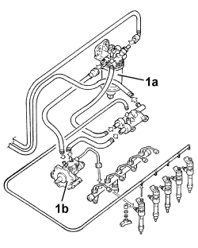

1060OB LOW FUEL DELIVERY PRESSURE CIRCUIT CHECK
- Path
- Test > 10 ENGINE > 1060 DIESEL INJECTION SYSTEM > 1060O DIESEL FUEL INJECTION SYSTEM TESTS > 1060OB LOW FUEL DELIVERY PRESSURE CIRCUIT CHECK
- Kind
- test / check procedure
- Applies to
- engines: 1.9 JTD 8v, 1.9 JTD 16v, 2.4 JTD 20v; all production periods
- Interactive page
- https://sloeber94.github.io/elrnDB-fCrm/en/#/194003924
Applies to: engines: 1.9 JTD 8v, 1.9 JTD 16v, 2.4 JTD 20v; all production periods
Connect the diagnostic equipment pressure transducer between the diesel filter (1a) and the pressure pump (1b) (connect it to the filter outlet).
Press the START/STOP button.
Within 30 seconds, check that the pressure reading on the gauge is between 2 and 3 bar.

Topics that link to this page (27)
- B010 ENGINE DOES NOT START (UNDER ANY CIRCUMSTANCES)
- B013 ENGINE STARTS WITH DIFFICULTY
- B015 ENGINE DOES NOT START (STARTER MOTOR WORKING)
- D003 ENGINE NOT RUNNING SMOOTHLY / (IRREGULAR OPERATION)
- D005 ENGINE DOES NOT PRODUCE BEST PERFORMANCE
- D009 ENGINE NOT FEELING ACCELERATOR PEDAL PRESSURE
- D010 ENGINE IDLE IRREGULAR
- D014 ENGINE GOING OFF ON IDLING (THEN RESTARTING)
- D015 POOR CHANGE IN ENGINE SPEED ON PRESSING ACCELERATOR PEDAL
- D016 POOR ENGINE RESPONSE
- D020 ENGINE CUTS OUT WHILST RUNNING (THEN NOT RESTARTING)
- D021 ENGINE CUTS OUT WHILST RUNNING (THEN RESTARTS)
- S003 ENGINE KNOCKING
- W005 WHITE EXHAUST FUMES
- W010 BLACK EXHAUST FUMES
- W011 EXCESSIVE EXHAUST FUMES
- X004 ENGINE OIL LEVEL TOO HIGH
- X011 LEAKS IN FUEL FEED SYSTEM
- Y002 P0087 - PRESSURE ON FLUTE
- Y003 P0088 - PRESSURE ON FLUTE
- Y004 P0100 - DEBIMETER (BEYOND UPPER LIMIT)
- Y005 P0100 - DEBIMETER (BELOW LOWER LIMIT)
- Y023 P0234 - TURBO PRESSURE
- Y039 P0401 - EGR VALVE
- Y100 P0101 - DEBIMETER SIGNAL (BEYOND UPPER LIMIT)
- Y104 P0237 - TURBO PRESSURE
- Y105 P0238 - TURBO PRESSURE